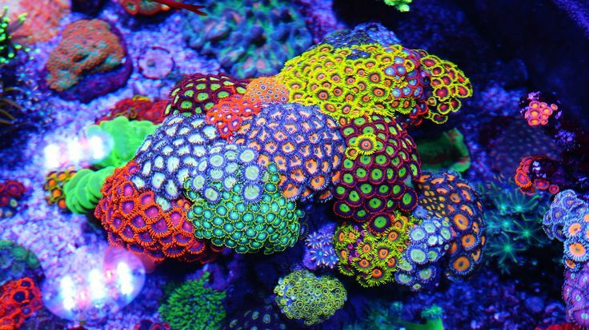

Beautiful Angles(corals)
Name: Acroporidae Acropora
Brief Introduction: A Acroporidae Acropora is a hydrozoan monomer or colony that forms clumpy, leaflike, or branched colonies of outer tentacles. Distributed in Australia, Indonesia, Marshall Islands, Federated States of Micronesia, Papua New Guinea, Philippines, Solomon Islands.

Name: Zoanthid
Brief Introduction: Button corals are a group of six-release worms (zoanths) , relatives of corals and sea anemones, that attach to rocks or coral reefs in shallow waters. Certain species of button corals secrete a highly toxic substance -- a sea anemone toxin (hydrotoxin).
Name: Pomotus
Brief Introduction: Pomotus is a member of the zoological community, the CNIDARIA, the class Corallina, the class Hexacorallia, the order Sarcophagidae, the family Sarcophagidae, and the genus Muscaria, distributed in American Samoa, Australia, Cambodia, Cook Islands, Djibouti, egypt, Eritrea, Fiji, French Polynesia, India, Indonesia, Israel, Japan, Jordan, Kenya, Kiribati, Malaysia, etc.
Name: Euphyllia Ancora
Brief Introduction: Great Hammer Coral, English name Euphyllia Ancora, is a group of soft corals, mainly distributed in Taiwan, Philippines, Australia, Ryukyu Islands. Suitable for water temperature 23-26 degrees, seawater specific gravity 1.022, illumination 30000-50000 lumen strong light band. The coral body is made up of corrugated plates and leaves. Groups are usually hemispherical, large groups up to 2 meters in diameter with regular Septa and smooth green edges. The tentacles are numerous and dense, and the tips are swollen, reniform or crescent-shaped, and curved inwards, appearing yellowish green or Yellowish Brown in color.

Name: Corallium rubrum
Brief Introduction: Corallium rubrum Colony life of Red Coral (Corallium rubrum). The average individual diameter is 0.5 mm ~ 2 cm, and each individual has 8 feathery tentacles. Septa 8 not paired, the diaphragm muscle to the abdomen growth, Septa monophyletic filament. There is only one oral Sulcus, located on the ventral surface. Most of the skeleton in the body, or by the body after the occurrence of body surface. Having a calcareous axonal bone that is branched in a tree but not in a flat plane and has a Pale pink to deep red color. In addition to the axial bone, there are calcareous spicules distributed in the glue layer, often living together with reef-building corals. Bone texture dense, bright color, often used as gemstone or carving materials, growing in the temperature of more than 20 °c of the equator and its adjacent tropical and subtropical areas. The beads of the emperors of ancient China were made of Red Coral, which could also be used as medicine. Due to large-scale mining, the number of sharp decline, was listed as China’s first-class protected animals.